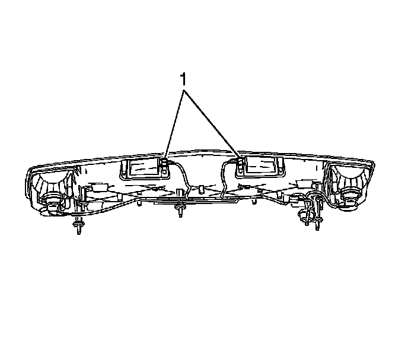

License Plate Lamp: Service and Repair
Rear License Lamp Replacement
Removal Procedure
1. Open the liftgate.
2. Remove the liftgate applique. Refer to Liftgate Applique Replacement () .

3. Remove the license lamp (1) from the liftgate applique by lifting the retaining tabs and sliding the lamp away from the applique.
4. Remove the license lamp socket from the lamp assembly by turning it counterclockwise.
5. Remove the license lamp bulb from the socket if replacing.
Installation Procedure
1. Install the license lamp bulb into the socket if replacing.
2. Install the license lamp socket into the lamp assembly by inserting the socket and turning the socket clockwise.
3. Install the license lamp (1) to the liftgate applique by sliding the lamp into the applique until an audible click is heard.
4. Install the liftgate applique to the rear compartment lid. Refer to Liftgate Applique Replacement () .
5. Close the lift gate.